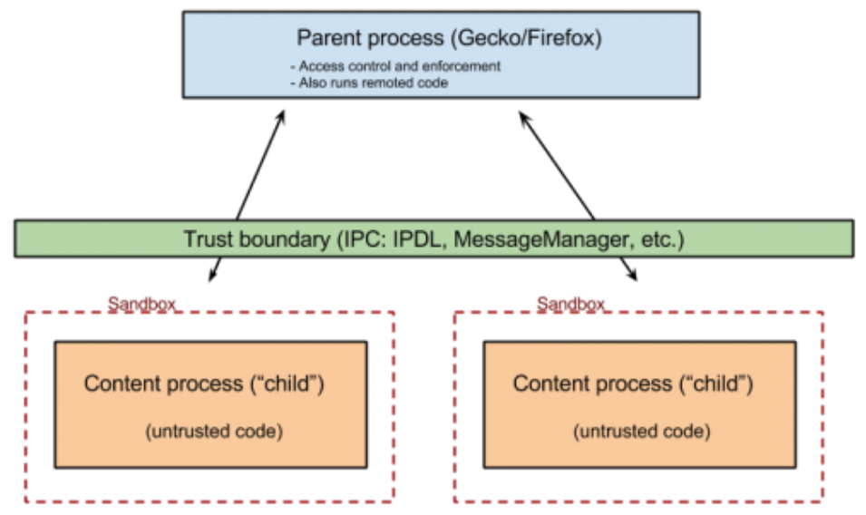

Note: Most of the below information is summarized from Dr. Yan Shoshitaishvili’s pwn.college lectures from the “Sandboxing” module. Much credit goes to Yan’s expertise! Please check out the pwn.college resources and challenges in the sources
What is Sandboxing?
Idea Behind Sandboxing:
- Untrusted data/code should live in a process with almost zero permissions
- Spawn “privileged” parent process
- Spawn “sandboxed” child processes
- When a child needs to perform a privileged action, it asks the parent

chroot
What is chroot (change-root):
- used to be the de-facto sandboxing utility
- changes the meaning of “/” for a process (and its children)
chroot("/tmp/jail")will disallow processes from getting out of the jail
- no syscall filtering or other isolation
- chroot() does NOT:
- Close resources that reside outside of the jail
cd (chdir())into the jail- Do anything else!
Pitfalls:
chroot()does not do anything to previously-open resources- linux has
openat()andexecveat()functions that take indirfdas an argument dirfdcan be a file descriptor representing any open()ed directory, or the special value AT_FDCWD
- linux has
- the kernel has no momemory of previous
chroot()s for a process- if you
chroot()in achroot()then the first one will be overwritten
- if you
- not isolated from PID, networks, or IPC
seccomp
What is seccomp:
- Essentially a “system call firewall” for Linux
- allows developers to allow/disallow/filter permitted system calls
- seccomp rules are inherited by children
- Can restrict operations run by root
How does it work:
- seccomp uses the kernel functionality extended Berkeley Packet Filters (eBPF)
- eBPFs are programs that run in an in-kernel, “probably-safe” virtual machine
Breaking Out
- Generally, sandboxed processes need to communicate with the privileged process
- This means normally some system calls will be permitted, allowing for:
- permissive policies
- syscall confusion
- kernel vulnerabilities in the syscall handlers
- This means normally some system calls will be permitted, allowing for:
Permissive Policies
- Caused by a combination of:
- there are a lot of system calls with a lot of complexity, easy to miss something
- developers may avoid breaking functionality by erring on the side of permissiveness
- Common syscalls to abuse:
ptrace()can let a sandboxed process “puppet” a non-sandboxed processsendmsg()can transfer file descriptor between processesprctl()has bizarre possible effectsprocess_vm_writev()allows direct access to other process’ memory
Syscall Confusion
- Many 64-bit architectures are backwards compatible with their 32-bit ancestors
- some systems allow switching between 32-bit and 64-bit mode in the same process
- the kernel must be ready for either mode
- syscall numbers differ between architectures, including 64-bit vs 32-bit of the same architectures
- these polices often fail to properly sandbox one or the other mode
- Example:
exit()is syscall 60 on amd64 but syscall 1 on x86
- Example:
- these polices often fail to properly sandbox one or the other mode
- some systems allow switching between 32-bit and 64-bit mode in the same process


Please share using the links if you enjoyed!